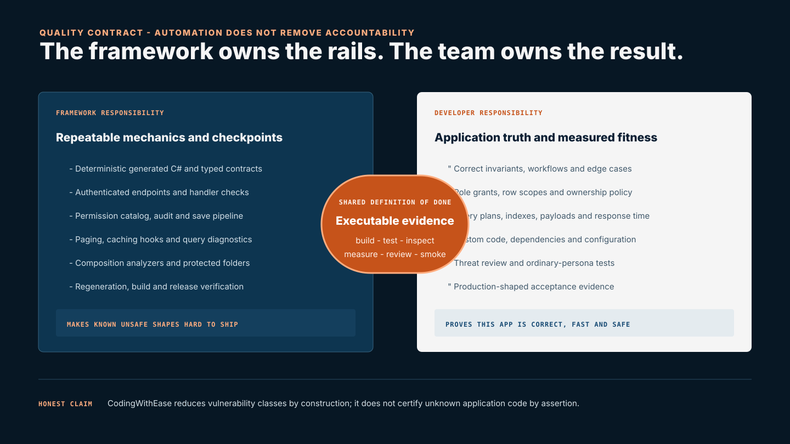

{kind=link}
Declare surface
The entity CRUD mask and custom methods state which capabilities may exist.
Engineering reference · 05
CodingWithEase standardizes infrastructure, generates security boundaries, and detects known unsafe shapes. It does not invent correct business rules, prove that a custom query is fast, or remove the need for engineering review. Enterprise quality comes from making that responsibility explicit and verifiable.
Entities/ Commands/ Queries/
Services/ Security/ Components/
Engineer + agent author business intent
Framework/
cwe-gen only · never hand-edit
Platform/
Framework-managed · documented extension points only
Tests/
Engineer proves the application behaviorThe framework can make safe mechanics the default and unsafe shortcuts visible. Only the application team knows whether the business decision, data scope, response time, and operational outcome are correct.

| Concern | Framework responsibility | Developer responsibility | Required evidence |
|---|---|---|---|
| Business rules | Provides entities, commands, validation hooks, transactions, audit, and test structure. | Defines invariants, state transitions, approvals, ownership, exceptional paths, and domain tests. | Scenario tests agreed with process owners. |
| Authorization | Generates keys, catalogs, authenticated endpoints, handler checks, permission-aware operations, and fail-closed client gates. | Chooses public capabilities, role grants, row scopes, ownership rules, and tests ordinary users. | Catalog dump, grant tests, scoped-query tests, and denied hostile requests. |
| Query correctness | Supplies typed query options, projection allow-lists, safe filtering, deterministic paging, and diagnostics. | Writes the actual predicate, joins, projection, ordering semantics, and complete data scope. | Known datasets, edge cases, and result assertions. |
| Query performance | Warns about unbounded collections, supports paging and caching, and exposes unsafe cache declarations. | Measures query plans and payloads, selects indexes, avoids N+1 work, chooses paging, and validates production-scale data. | Plans, timings, row counts, payload size, and load tests. |
| Caching | Partitions by caller and permission set, invalidates declared tags, and safely disables undeclared custom-query caching. | Declares every data dependency or opts out when time, external systems, or opaque services affect the result. | Freshness tests before and after relevant writes and permission changes. |
| Custom code and dependencies | Protects framework-owned paths and detects several boundary violations. | Reviews custom integrations, secrets, package risk, error handling, deployment, and operational monitoring. | Threat review, dependency scanning, configuration review, and release smoke. |
A framework cannot guarantee that an application has zero vulnerabilities. CodingWithEase reduces vulnerability classes by centralizing and protecting security infrastructure; the application still requires correct policy decisions, custom-code review, dependency maintenance, configuration, and adversarial testing.
The high-risk mechanics live in generated or framework-managed zones. The agent works through entities, commands, queries, permissions, scopes, and components; regeneration recreates the same enforcement chain from that declared intent.
The entity CRUD mask and custom methods state which capabilities may exist.
Keys, DTOs, operations, endpoints, handlers, and AI descriptors are emitted together.
Framework/ is generator-owned. Infrastructure changes belong in the framework, not an app-agent patch.
Every protected handler evaluates the current caller independently of browser state.
Tests and analyzers deliberately attempt unsafe paths and require the build or request to fail.
// Read-only: no Create, Update, or Delete artifacts exist.
[CxEntity(Crud = CxCrud.View)]
public partial class ReleasedSpecification { ... }
// Append-only: Update and Delete are absent everywhere.
[CxEntity(Crud = CxCrud.View | CxCrud.Create)]
public partial class AuditObservation { ... }A verb outside the declared mask generates no command, endpoint, operations method, permission key, catalog entry, or AI tool. A read-only contract cannot bind to an editable grid: the mistake becomes a compile error.
These examples are recorded in the current framework documentation and release probes. They show both the benefit of automation and the point where human judgment remains necessary.
A real query transferred 740 KB; only 0.7% of the payload was useful on first paint. The analyzer now warns on bare collection queries, but the developer must choose paging or justify a domain bound.
Those queries read an entity not represented by their cache tags. Custom queries now default to no cache until the author declares dependencies or explicitly chooses zero duration.
Synchronous SaveChanges() bypassed validation, authorization, audit, cache reset, files, and events. It is now a build error, and release verification mutates a real call to prove the diagnostic fires.
An immutable document version received Update and Delete. CRUD masks now remove forbidden verbs across server, client, permission, and AI surfaces in lockstep.
The effective permission catalog can be dumped after generation so the constant, grant, and handler key can be compared. Ordinary-persona tests prove denial where Administrator would hide a defect.
The starter includes role composition, permission gate, scope policy, and scoped-query tests using the real permission-set implementation over in-memory SQLite.
These are framework-level findings and safeguards, grounded in revision d9f47f85. They do not automatically certify a particular customer application; each app must publish its own build, security, correctness, and performance results.
“Return a list” does not reveal whether the domain contains five rows or five million. Silently clamping would turn a performance defect into missing data, so CodingWithEase asks the author to state the intended shape.
[CxQuery]
public static Task<List<ShiftRow>> GetProgramShifts(
ApplicationDbContext db,
Guid workProgramId)
// How many shifts can this return?[CxQuery]
public static Task<CxPagedResult<ShiftRow>>
GetProgramShifts(
ApplicationDbContext db,
Guid workProgramId,
CxQueryOptions options)
// Measure the plan and index for real data.[CxQuery]
[CxBoundedResult(50,
"One plant's job titles; bounded by the org chart.")]
public static Task<List<JobTitle>>
GetJobTitles(ApplicationDbContext db)
// Runtime guard logs if the claim becomes false.The framework provides paging, safe filters, deterministic sorting, cache infrastructure, and warnings. The developer still reviews generated SQL, projections, indexes, cardinality, payload size, N+1 behavior, concurrency, and response time using production-shaped data.
Caller and permission partitioning prevent cross-user reuse. Write-time tags keep declared data fresh. A query that reads through a service, external API, clock, or another entity still needs an explicit developer decision.
[CxQuery(Tags = new[] {
nameof(Department),
nameof(Employee)
})]
public static Task<HeadcountRow>
GetHeadcount(ApplicationDbContext db, ...)[CxQuery(CacheSeconds = 0)]
public static Task<MachineState>
GetLiveMachineState(
IMachineGateway gateway,
CancellationToken ct)
// A database write cannot invalidate this value.Generated infrastructure can authenticate, authorize, validate the request shape, open the transaction, stamp audit fields, publish events, and normalize errors. It cannot decide the factory’s approval policy.
This command’s permission says who may attempt approval. The method body states when approval is valid for the business.
[CxCommand(Permission = TimePermissions.Approve)]
public static async Task<CxResult> ApproveHours(
ApplicationDbContext db,
ApproveHours request,
CancellationToken ct)
{
var entry = await db.TimeEntries.FindAsync(...);
if (entry.Status != TimeStatus.Submitted)
return CxResult.Failure("Only submitted time can be approved.");
if (entry.EmployeeId == request.ApproverEmployeeId)
return CxResult.Failure("Self-approval is not allowed.");
entry.Approve(request.ApproverEmployeeId);
await db.SaveChangesAsync(ct);
return CxResult.Success();
}A framework release can prove its rails. An application release must additionally prove its domain behavior, access model, data scale, integrations, configuration, and operating environment.
Run cwe-gen twice and require a clean generated tree with no orphaned artifacts.
Treat security diagnostics as errors and run CheckComposition in addition to compilation.
Verify invariants, transitions, exceptional paths, and rejected operations using realistic data.
Inspect the effective permission catalog and prove API, page, row-scope, and AI-tool denial outside Administrator.
Capture SQL plans, indexes, row counts, payloads, timings, cache behavior, and concurrent load against production-shaped volume.
Validate configuration, secrets, health, authentication, critical routes, integrations, logging, and rollback in the target environment.
“Built with CodingWithEase” describes the delivery system. It is not a substitute for an application-specific acceptance record signed by engineering and the process owner.